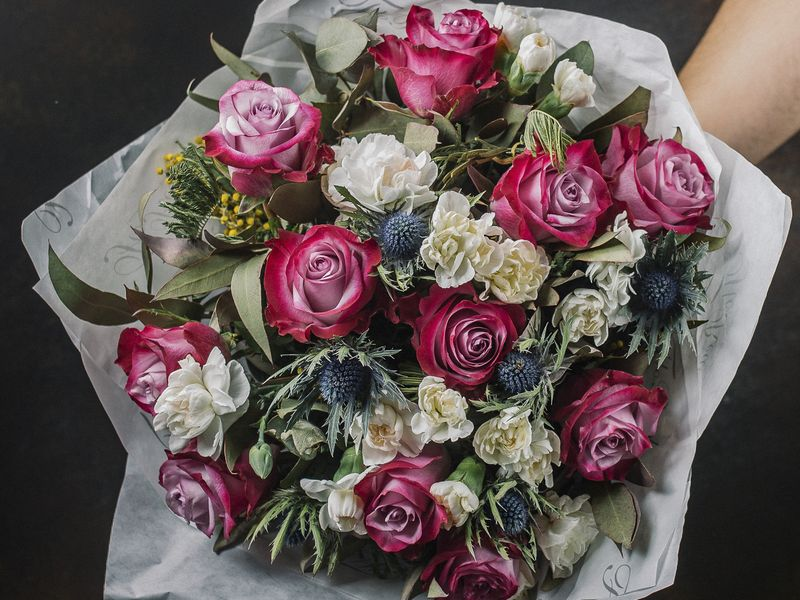

General Floral Design
Floral design for everyday moments, from birthday and thank-you bouquets to seasonal arrangements, corporate flowers, and sympathy designs. Arrangements may be created as hand-tied bouquets or vase arrangements, depending on the order.